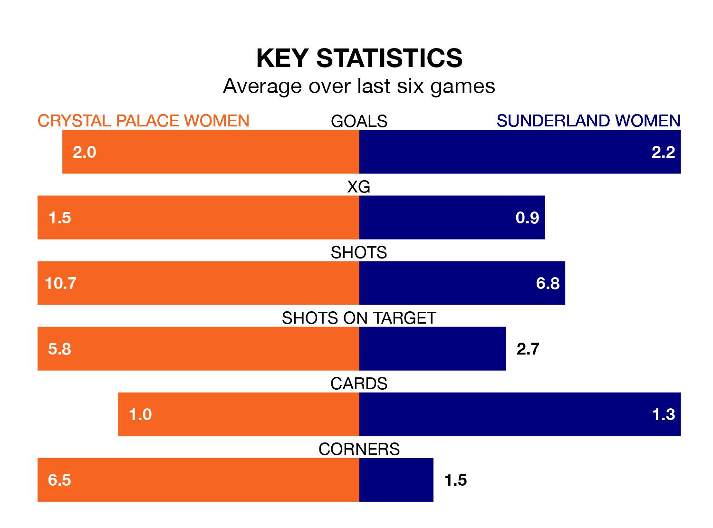

Crystal Palace Women host Sunderland Women in Sunday's early match at the VBS Community Stadium looking to bounce back from defeat last time out in the FA Women's Championship.
Crystal Palace, who sit top of the league after 21 games, fell to a 0-2 away defeat to Lewes Women on April 21.
They face a Sunderland side who also lost their last match, a 1-0 defeat to Charlton Athletic Women, and who sit third in the table.
With 55 goals in 21 games so far this season, Crystal Palace are the league's highest scorers with 2.6 goals per game. And they are conceding fewer than average, letting in 20 goals at a rate of 1.0 per game.
Sunderland are also above average scorers, with 1.5 goals per game, compared to a league average of 1.4. They have conceded 0.9 goals per game.
In Elise Hughes, the hosts have the league's most on-form striker so far this season. She has notched 16 goals in 21 appearances.
Her goal rate of one every 114 minutes is quicker than that of Emily Scarr, the away team's top scorer with a goal every 160 minutes, and a total of seven goals in 20 games.
Crystal Palace are in fantastic form in the FA Women's Championship, with five wins and one loss from their last six games.
With four wins and two losses over that period, Sunderland's form is worse – they have taken 12 points from 18, compared to Crystal Palace's 15.
In the last five years, Crystal Palace and Sunderland have played each other on five occasions. Crystal Palace won two of them, Sunderland one, and they drew twice.
On average, Crystal Palace scored 1.0 goal and Sunderland 1.0 in those matches.
Their last meeting was on September 17, when they played out a 1-1 draw.
Updated: 07:59 (UTC), 26/04/24